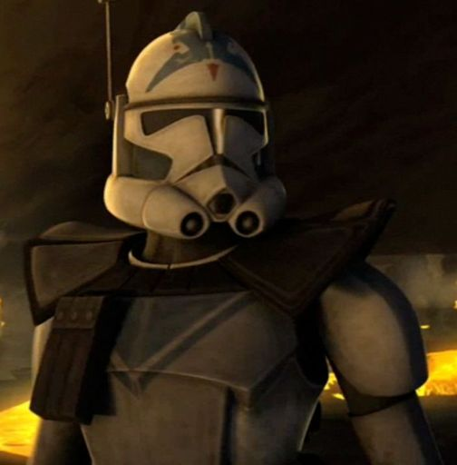
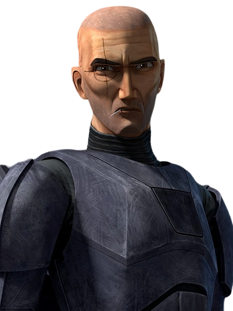
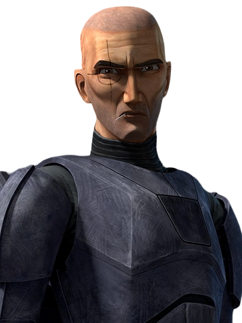
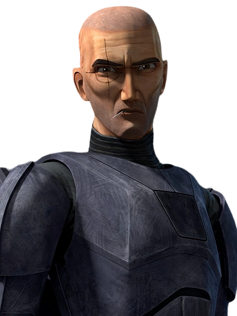

Clones Memorables
- Cincos, CT-5555
- Echo, CT-1409
- Crosshair, CT-9904
- Este clon de la legión 501º ascendió de recluta hasta ARC troper, perdió a todos los miembros de su pelotón a excepción de Jessie (CT-5597) y Echo (CT-1409), quien desapareció en combate. Cincos logró descubrir la conspiración con los chips de conducta que tienen implantados en secreto los clones, e intentó dar a conocer la noticia, pero fue silenciado por el clon Fox bajo las ordenes del canciller Palpatin, el lider Sith oculto en el Senado Galactico.
- El clon Echo, de la 501º también ascendió de recluta a ARC troper, participó en múltiples batallas importante y fue dado por desaparecido en combate durante una arriesgada misión de infiltración para liberar al Jedi Even Piell, Echo quedó gravemente herido por una explosión y fue capturado por el ejercito Separatista. Tras años como prisionero de guerra recibiendo torturas, fue rescatado de casualidad por un pelotón de clones, la Republica lo convirtió en un Cyborg para darle la oportunidad de sobrevivir y poder seguir luchando en el ejercito clon, aunque esta vez como miembro de la unidad Batch Bad, un pelotón de soldados modificados geneéticamente para cumplir misiones de alto riesgo concretas. Echo sobrevivió a las guerras clon y desertó junto a su nuevo pelotón del Imperio Galactico para trabajar como mercenario y finalmente luchar en contra del Imperio.
- fue un comando clon que sirvió en el Gran Ejército de la República durante las Guerras Clon como parte de la Fuerza Clon 99 (La Batch Bad). Crosshair poseía mutaciones genéticas que le conferían una vista excepcional, y debido a ello, actuó como francotirador, tomando ventaja de su gran puntería. Tras la orden 66 su pelotón, quienes no tenian el chip clon, desertaron del nuevo Imperio Galactico, pero Crosshair como soldado con la creencia en la cual un soldado sirve para cumplir ordenes, sin importar de cuál se trate, se mantuvo en el Imperio, donde participó en misiones poco eticas y preseció como los clones empezaban a ser sustituidos por personas normales entrenados para ser soldados imperiales, esto y el mal trato que sufrian los clones en esta época le generó odio contra el Imperio, donde tras ejecutar a un oficial por permitir que un compañero clon muriese delante suya por no querer malgastar equipo médico en clones, Crosshair fue condenado y sirvió como sujeto de pruebas para experimentos donde pretendían controlas las acciones del mismo clon.

 

